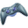
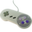
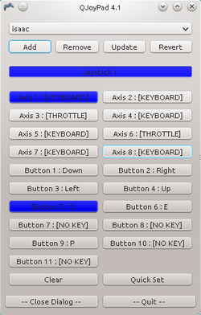
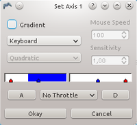
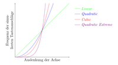
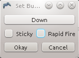
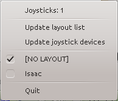

QJoyPad
Dieser Artikel wurde für die folgenden Ubuntu-Versionen getestet:
Ubuntu 14.04 Trusty Tahr
Zum Verständnis dieses Artikels sind folgende Seiten hilfreich:
Das Programm QJoyPad  erlaubt es, ein Gamepad bzw. einen Joystick wie eine Tastatur oder Maus zu verwenden. Man kann damit zum Beispiel Spiele, die ganz oder teilweise mittels Tastatur und/oder Maus bedient werden, mit Hilfe eines Gamepads oder Joysticks steuern. Außerdem unterstützt das Programm Profile und man kann so beim Start eines Spiels auch problemlos eine angepasste Belegung laden.
erlaubt es, ein Gamepad bzw. einen Joystick wie eine Tastatur oder Maus zu verwenden. Man kann damit zum Beispiel Spiele, die ganz oder teilweise mittels Tastatur und/oder Maus bedient werden, mit Hilfe eines Gamepads oder Joysticks steuern. Außerdem unterstützt das Programm Profile und man kann so beim Start eines Spiels auch problemlos eine angepasste Belegung laden.
Installation¶
QJoyPad ist ab Ubuntu 14.04 in den offiziellen Paketquellen enthalten und kann über das folgende Paket installiert werden:
qjoypad (universe)
 mit apturl
mit apturl
Paketliste zum Kopieren:
sudo apt-get install qjoypad
sudo aptitude install qjoypad
Kompilieren aus dem Quellcode¶
Alternativ kann man das Programm aus dem Quellcode selber kompilieren[3]. Der Programmquellcode ist auf der Projekthomepage  als tar.gz-Archivdatei verfügbar. In diesem Artikel wird davon ausgegangen, dass Version 4.1.0 aktuell ist.
als tar.gz-Archivdatei verfügbar. In diesem Artikel wird davon ausgegangen, dass Version 4.1.0 aktuell ist.
Um QJoyPad zu kompilieren, sind die Programmbibliotheken libxtst und qt4 erforderlich. Die dafür nötigen Entwicklerversionen der Bibliotheken (gekennzeichnet durch die Erweiterung "-dev" im Paketnamen) sind nicht in der Standardinstallation von Ubuntu enthalten und müssen nachinstalliert werden:
libxtst-dev
libqt4-dev
mit apturl
Paketliste zum Kopieren:
sudo apt-get install libxtst-dev libqt4-dev
sudo aptitude install libxtst-dev libqt4-dev
Der heruntergeladene Quellcode muss entpackt [5]werden. Anschließend bereitet man die Installation vor. Dazu gibt man in einem Terminal[6] Folgendes ein:
tar -xzvf qjoypad-VERSION.tgz cd qjoypad-VERSION/src ./config
Sollte der config-Befehl feststellen, dass die Installation nicht möglich ist, weil zum Beispiel Programmbibliotheken fehlen, wird dies entsprechend im Terminal als Fehler gemeldet. Ein fehlerfreier Durchlauf zeigt lediglich an, wo das Programm installiert wird und welche Pfade verwendet werden.
Ist man mit den vorgeschlagenen Pfaden einverstanden, kann man das Programm kompilieren und anschließend installieren[3]. Für die abschließende Installation werden Root-Rechten[7] benötigt:
make make install
Programmaufruf¶
Das Programm steht nach der Installation über dem Terminal-Befehl:
qjoypad [OPTIONEN] [PROFILNAME]
zur Verfügung[4]. Auf Wunsch kann man einen Programmstarter erstellen.
Wenn das Programm gestartet wird, erscheint im Systemabschnitt der Kontrollleiste ein kleiner Controller als Symbol, entweder  oder . Ein Klick mit der linken Maustaste  öffnet das Programmfenster.
öffnet das Programmfenster.
QJoyPad muss nicht zwangsläufig vor dem Programm gestartet werden, dass man steuern möchte. Man kann es auch laden, während das Programm bereits läuft, da QJoyPad sich gegenüber dem System wie eine USB-Tastatur oder -Maus verhält, die ja auch jederzeit angeschlossen und wieder entfernt werden kann.
QJoyPad kennt die folgenden Optionen:
| Kommandozeilenoptionen für QJoyPad | |
| Option | Beschreibung |
--device GERÄT | Standardmäßig werden Joysticks und Gamepads unter den Gerätedateien /dev/input/js0, /dev/input/js1, usw. gesucht. Mit der Option --device kann man einen alternativen Pfad angeben. |
--notray | Das Programmsymbol wird in einem kleinen Fenster angezeigt und nicht im Kontrollabschnitt der Symbolleiste. Die Bedienung ist identisch. |
--update | veranlasst eine bereits laufende Instanz von QJoyPad, nach neuen Profilen und neu angeschlossenen Geräten zu suchen |
-h, --help | zeigt eine kurze Übersicht über die Optionen |
PROFILNAME | (optional) Gibt man einen Namen eines bestehenden Profils an, so wird dieses beim Start geladen. Ansonsten startet QJoyPad mit dem zuletzt verwendeten Profil. Falls QJoyPad bereits läuft, kann man mit dem Befehl qjoypad PROFILNAME das Profil wechseln. |
Bedienung¶
|  |
| Hauptfenster von QJoyPad |
Das Programmfenster gliedert sich in vier Bereiche:
Ganz oben können Profile erstellt und verwaltet werden.
Darunter kann der Joystick bzw. das Gamepad ausgewählt werden, das QJoyPad überwachen soll.
Die Schaltflächen in der Mitte, die mit "Axis" oder "Button" beschriftet sind, dienen zur Einstellung des Verhaltens von QJoyPad.
Ganz unten im Programmfenster sind noch Schaltflächen, um das Programm zu minimieren oder zu beenden.
Wenn ein Joystick oder ein Gamepad angeschlossen ist und erkannt wurde, so färben sich einige Schaltflächen im Programmhauptfenster blau, sobald man den Joystick bzw. das Gamepad bewegt. Damit wird angezeigt, welches Bedienelement erkannt wurde.
Im vorliegenden Screenshot ist ein XBox-Controller angeschlossen, bei dem der obere rechte Analog-Hebel nach links bewegt und die hintere linke Taste gedrückt wurde. QJoyPad erkennt, dass der Joystick 1 bewegt wird, und dass dort die Achse 1 (Analog-Hebel) sowie der Knopf 5 aktiviert wurden.
Profile¶
QJoyPad erlaubt es, einmal getroffene Einstellungen (Tasten- und Mauszuordnungen, Empfindlichkeiten, siehe übernächster Abschnitt) in Form eines Profils abzuspeichern bzw. wieder abzurufen. Ganz oben im Programmfenster kann mittels Auswahlliste ein Profil ausgewählt werden; im Screenshot heißt es "isaac" und ist zur Bedienung des Spiels The Binding of Isaac gedacht.
Die vier Schaltflächen bewirken folgendes:
| Schaltflächen zur Profilverwaltung | |
| Schaltfläche | Funktion |
| Add | fügt ein neues Profil hinzu, dessen Name dann gewählt werden kann. Dabei werden die Einstellungen des vorher gewählten Profils übernommen. Möchte man ein leeres Profil, wählt man in der Auswahlliste [No Layout], bevor man auf Add klickt. |
| Remove | entfernt das ausgewählte Profil nach Rückfrage. |
| Update | Vorgenommene Änderungen werden erst mit einem Klick auf Update in das gewählte Profil übernommen. Andernfalls gehen die geänderten Einstellungen beim Beenden von QJoyPad verloren. |
| Revert | setzt geänderte Einstellungen auf die im ausgewählten Profil gespeicherten Werte zurück. |
Profile werden im Ordner ~/.qjoypad3/ gespeichert.
Joystick¶
Sind mehrere Joysticks und/oder Gamepads an den Computer angeschlossen, kann man unter der Schaltfläche Joystick NUMMER zwischen den Joysticks wechseln. Derzeit arbeitet QJoyPad mit bis zu vier Joysticks bzw. Gamepads zusammen.
Axes, Buttons¶
Als Axes (Achsen) werden alle Bedienelemente eines Joysticks/Gamepads bezeichnet, bei denen die Auslenkung aus der Ruhelage von Bedeutung ist. Häufig werden diese Bedienelemente als Analog-Hebel bezeichnet. Je stärker deren Auslenkung, desto höher zum Beispiel die Laufgeschwindigkeit der Spielfigur.
Buttons (Knöpfe) sind hingegen alle Bedienelemente, bei denen nur der Status gedrückt oder nicht gedrückt von Bedeutung ist.
Bei manchen Joysticks oder Gamepads kommt es vor, dass ein Bedienelement, dass eigentlich nur wie ein Knopf funktioniert, von QJoyPad als Achse erkannt wird.
Achsen¶
|  |
| Dialogfenster Set Axis |
Auf der Schaltfläche für eine Achse wird angezeigt, ob diese dem [Keyboard], also einer Taste, oder der [Mouse] zugeordnet ist. Ein Klick auf die Schaltfläche öffnet das nebenstehende Dialogfenster.
Im unteren Bereich des Dialogs sind ein oder zwei Skalen abgebildet, an denen blaue und rote Dreiecke angebracht sind. Wenn man das der Achse zugehörige Bedienelement bewegt, so wird die Auslenkung als Balken dargestellt, dessen Farbe bei Überschreiten der Dreiecke von Grau zu Blau zu Rot wechselt.
Die blauen Dreiecke dienen der Einstellung des sog. Totbereichs, engl. Deadzone. Sie können mit der Maus (symmetrisch) verschoben werden. Erst wenn die Auslenkung des Bedienelements das blaue Dreieck überschreitet, löst QJoyPad die zugeordnete Aktion aus. Die roten Dreiecke spielen bei der Verwendung des Gradienten eine Rolle, der weiter unten beschrieben wird.
Unterhalb der Skala/Skalen gibt es ein Auswahlmenü für den sog. Throttle (Englisch für Gashebel) mit den folgenden Auswahlmöglichkeiten:
| Auswahlmöglichkeiten für Throttle | |
| Option | Beschreibung |
| No Throttle | Die beiden Auslenkungsrichtungen eines Bedienelements werden unterschieden; man kann ihnen verschiedene Aktionen zuweisen. No Throttle kommt üblicherweise für den Stick des Joysticks zum Einsatz. |
| Positive Throttle | Das Bedienelement hat nur eine Auslenkungsrichtung (zum Beispiel Tasten für Gas und Bremse). Man kann nur eine Aktion zuweisen, die nach verlassen des Totbereichs ausgeführt wird. |
| Negative Throttle | Wie Positive Throttle, allerdings mit umgekehrtem Prinzip: die gewünschte Aktion wird so lange ausgeführt, bis das Bedienelement in über einen gewünschten Druckpunkt hinaus betätigt wird; der Totbereich liegt entsprechend am Ende der Skala. |
Oben links im Fenster kann man die Aktion auswählen, die der Achse zugewiesen werden soll. Es gibt folgende Möglichkeiten:
| Von QJoyPad ausführbare Aktionen | ||
| Option | Beschreibung | Anmerkungen |
| Keyboard | Bei Verlassen des Totbereichs wird das Drücken einer Taste auf der Tastatur oder der Maus simuliert. | Die Zuweisung der Tasten erfolgt über die Schaltfläche(n) unterhalb der Skala/Skalen. Wenn man darauf klickt, wird man aufgefordert, die gewünschte Taste zu drücken. Die kann eine Taste auf der Tastatur (Tastenkombinationen sind nicht möglich) oder eine der Maustasten sein. Die Tastenkombination Strg + X löscht eine Tastenzuordnung. |
| Mouse (Vert.) | Die Achse des Joysticks/Gamepads steuert die vertikale Mausbewegung. | Änderungen an den Einstellungen werden erst dann aktiv, wenn der Mauszeiger das Programmhauptfenster von QJoyPad verlassen hat. Rechts oben lässt sich die Mauszeigergeschwindigkeit Mouse Speed wählen, mit der QJoyPad den Zeiger bewegt. Außerdem sollte der Gradient aktiviert werden, siehe unten. |
| Mouse (Vert. Rev.) | Die Achse des Joysticks/Gamepads steuert die vertikale Mausbewegung. Die Bewegung wird dabei invertiert, d.h. eine Auslenkung der Achse nach oben bewegt den Mauszeiger nach unten und umgekehrt. | |
| Mouse (Hor.) | Die Achse des Joysticks/Gamepads steuert die horizontale Mausbewegung. | |
| Mouse (Hor. Rev.) | Die Achse des Joysticks/Gamepads steuert die horizontale Mausbewegung. Die Bewegung wird dabei invertiert, d.h. eine Auslenkung der Achse nach links bewegt den Mauszeiger nach rechts und umgekehrt. | |
|  |
| Prinzip der Gradientenfunktion |
Eine Besonderheit bei der Verwendung des Keyboard-Modus stellt der Gradient dar, für den es links oben ein Kontrollfeld gibt. Wenn man den Gradienten aktiviert, simuliert QJoyPad, dass die zugeordnete Taste wiederholt gedrückt wird, sobald das Bedienelement den Totbereich verlässt. Die Wiederholungsrate, mit der die Taste simuliert gedrückt wird, steigt dabei mit zunehmender Auslenkung des Bedienelements. Erst bei Überschreiten des frei positionierbaren roten Dreiecks wird dem Computer gemeldet, dass die Taste dauerhaft gedrückt ist.
Mithilfe der zweiten oberen Auswahlliste Linear, Quadratic, usw., kann die Charakteristik des Gradienten bestimmt werden, mit der die Wiederholungsrate von der Auslenkung abhängt. Die nebenstehende Grafik verdeutlicht das Prinzip (Anklicken zum Vergrößern). Der fünfte Eintrag Power Function erlaubt es, eine Gradientenfunktion beliebiger Stärke zu wählen. Kleine Werte für Sensitivity würden zu einem nahezu linearen Verlauf der Kurve in der nebenstehenden Grafik führen, große Werte hingegen zu einer sehr stark gekrümmten Kurve.
Bei der Maussteuerung ist die Verwendung des Gradienten nahezu unumgänglich. Ist er nicht aktiviert, so bewegt QJoyPad den Mauszeiger immer nur um einen Schritt weiter, sobald man den Totbereich des Bedienelements verlässt. Man müsste das Bedienelement loslassen und wieder auslenken, um den nächsten Schritt zu bewirken. Der Gradient schafft hier Abhilfe. Üblicherweise sollte der Typ Linear ausreichen. Die Wirkung der anderen Typen kann man am Besten testen, wenn man die Mausgeschwindigkeit auf den Wert 1 setzt.
Nach Vornehmen der gewünschten Einstellungen kann das Dialogfenster mit Okay geschlossen werden; erst dann werden die Einstellungen aktiv. Cancel hingegen verwirft etwaige Änderungen.
Knöpfe¶
|  |
| Dialogfenster Set Button |
Im Programmhauptfenster wird auf den Schaltflächen für Buttons angezeigt, welcher Taste (Tastatur oder Maus) der jeweilige Knopf zugeordnet ist.
Klickt man auf die Schaltfläche, öffnet sich das nebenstehende Dialogfenster. Nach einem Klick auf die darin enthaltene Schaltfläche wird man aufgefordert, die gewünschte Taste (Maus oder Tastatur, Tastenkombinationen sind nicht möglich) zu drücken, die dem Button auf dem Joystick bzw. Gamepad zugewiesen werden soll. Die Tastenkombination Strg + X löscht eine Tastenzuordnung.
Die Option Sticky macht die Tastenzuordnung "klebrig", d.h. es wird bei der ersten Betätigung des Buttons auf dem Joystick bzw. Gamepad simuliert, dass die zugeordnete Taste dauerhaft gedrückt wird. Erst bei der zweiten Betätigung des Buttons wird die Taste virtuell wieder losgelassen. Man schaltet also zwischen virtuell gedrückt und virtuell nicht gedrückt hin und her.
Die Option Rapid Fire hingegen bewirkt, dass die zugeordnete Taste mit hoher Wiederholrate virtuell gedrückt wird, solange man den Button auf dem Joystick bzw. Gamepad gedrückt hält.
Nach Vornehmen der gewünschten Einstellungen kann das Dialogfenster mit Okay geschlossen werden; erst dann werden die Einstellungen aktiv. Cancel hingegen verwirft etwaige Änderungen.
Clear und Quick Set¶
Die Schaltfläche Clear setzt alle Zuordnungen und die Totpunkte der Achsen auf die Voreinstellungen zurück. Das entspricht dem Profil [NO LAYOUT]. Das Zurücksetzen wird nicht in ein eventuell gewähltes Profil übernommen, dazu müsste man erst auf die Schaltfläche Update drücken (siehe Abschnitt Profile weiter oben).
Die Schaltfläche Quick Set ruft eine automatische Schnellkonfiguration auf. Man wird aufgefordert, ein Bedienelement zu bedienen, dem man danach dann eine Taste (Maus oder Tastatur) zuweist. Weitere Einstellungen oder die Zuweisung zur Mausbewegung sind nicht vorgesehen, können nach Beenden des Quick Set aber noch nachträglich vorgenommen werden.
Programm schließen und minimieren¶
Am unteren Ende des Programmhauptfensters finden sich zu guter Letzt noch die Schaltflächen Quit, um QJoyPad zu beenden. Close Dialog schließt das das Programmhauptfenster, ohne QJoyPad zu beenden. Es läuft dann im Hintergrund im Systemabschnitt der Kontrollleiste.
Kontextmenü¶
|  |
| Kontextmenü |
Klickt man mit der zweiten Maustaste  auf das Programmsymbol (im Systemabschnitt der Kontrollleiste), so öffnet sich das nebenstehende Kontextmenü. Darin wird die Zahl der angeschlossenen Joysticks angezeigt. Man kann außerdem schnell zwischen den gespeicherten Profilen wechseln.
auf das Programmsymbol (im Systemabschnitt der Kontrollleiste), so öffnet sich das nebenstehende Kontextmenü. Darin wird die Zahl der angeschlossenen Joysticks angezeigt. Man kann außerdem schnell zwischen den gespeicherten Profilen wechseln.
Der Eintrag Update layout list lässt QJoyPad neu erstelle Layouts in das Kontextmenü übernehmen. Ein Klick auf Update joystick devices ist immer dann erforderlich, wenn ein Joystick oder Gamepad an den Computer angeschlossen oder von ihm entfernt wurde, während QJoyPad (im Hintergrund) läuft.
Ein Klick auf Quit beendet QJoyPad.
Problembehebung¶
QJoyPad startet nicht (mehr)¶
QJoyPad startet minimiert im Hintergrund, d.h. beim Programmstart erscheint lediglich ein Symbol im Systemabschnitt der Kontrollleiste. QJoyPad erlaubt zudem immer nur eine Programminstanz, d.h. das Programm kann nicht zwei- oder mehrmals parallel aufgerufen werden. Als Sperre wird eine Lockdatei verwendet, die unter Umständen als Zombie zurückbleiben kann. Abhilfe könnten die Befehle:
killall qjoypad rm -f ~/lock.pid
schaffen.
Joystick oder Gamepad wird nicht erkannt¶
QJoyPad greift auf die Gerätedatei /dev/input/jsX zu [X = Zahl). Ein Joystick oder Gamepad muss also unter dieser Gerätedatei verfügbar sein. Üblicherweise sorgen die Gerätetreiber dafür, d.h. wenn der Joystick bzw. das Gamepad ordentlich installiert wurde, sollte es auch von QJoyPad erkannt werden. GGf. kann man einen symbolischen Link zur o.g. Gerätedatei setzen. Alternativ kann man QJoyPad mit der Option --device GERÄT starten.
Programmhauptfenster lässt sich nicht öffnen¶
Wenn kein Joystick oder Gamepad am Computer angeschlossen ist, meldet QJoyPad dies, wenn man versucht, das Hauptfenster zu öffnen. Wenn man dann den Josytick oder das Gamepad verbunden hatte (und es vom System erkannt wurde), klickt man mit der zweiten Maustaste auf das Programmsymbol und wählt im sich öffnenden Menü den Eintrag Update joystick devices. Danach sollte das Programmhauptfenster zu öffnen sein.
Zahl der Achsen/Buttons stimmt nicht¶
QJoyPad übernimmt die Zahl der Achsen und Buttons sowie deren Reihenfolge aus dem Treiber für das jeweilige Gerät. Wenn also zu viele oder zu wenige Achsen und Buttons angezeigt werden, muss der Treiber modifiziert oder ein anderer Treiber gewählt werden.
Die Steuerung von Programm XYZ funktioniert anders, als bei QJoyPad eingestellt¶
Einige Programme (hauptsächlich Spiele), die von Haus aus die Bedienung per Joystick oder Gamepad eingebaut haben, greifen die Steuerbewegungen direkt an der Gerätedatei /dev/input/js<Nummer> ab und setzen sie so um, wie man es zumeist in den Optionen des Programms einstellen kann. QJoyPad kann sich nicht dazwischen setzen, man muss sich also an die Möglichkeiten des gesteuerten Programms halten.
Links¶
joy2key - Alternative zu QJoyPad, das allerdings nur Tastenzuordnungen erlaubt, Kommandozeilenprogramm ohne grafische Oberfläche
js2mouse - Alternative zu QJoyPad, das allerdings nur Mausteuerung erlaubt, Kommandozeilenprogramm ohne grafische Oberfläche
antimicro
- Aktiv entwickelte Alternative, die von QJoyPad inspiriert wurde
- Erstellt mit Inyoka
-
 2004 – 2017 ubuntuusers.de • Einige Rechte vorbehalten
2004 – 2017 ubuntuusers.de • Einige Rechte vorbehalten
Lizenz • Kontakt • Datenschutz • Impressum • Serverstatus -
Serverhousing gespendet von